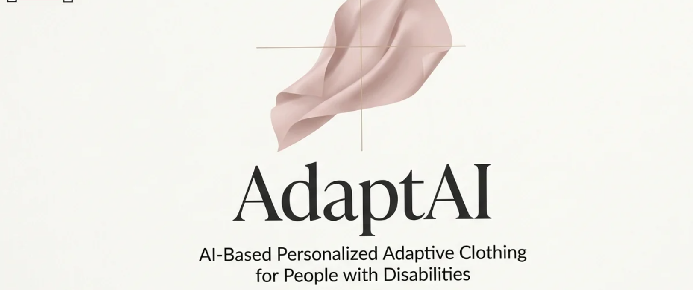
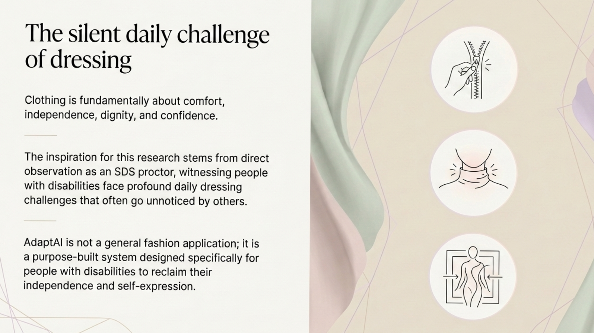
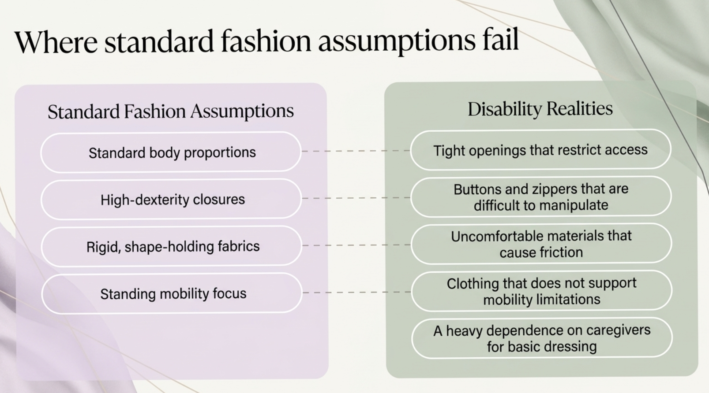
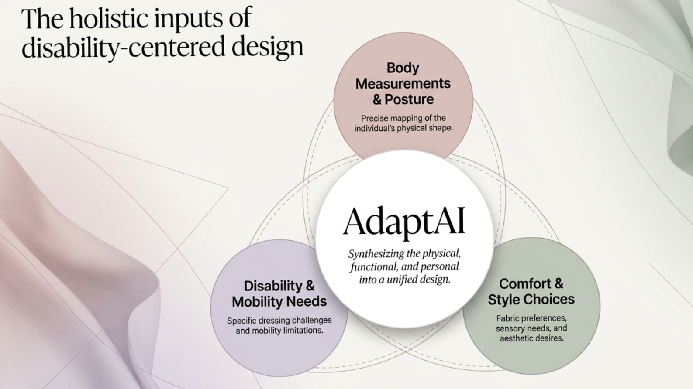
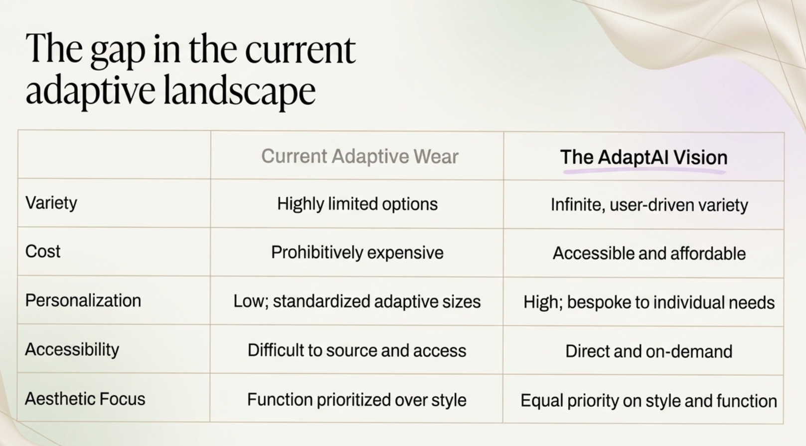
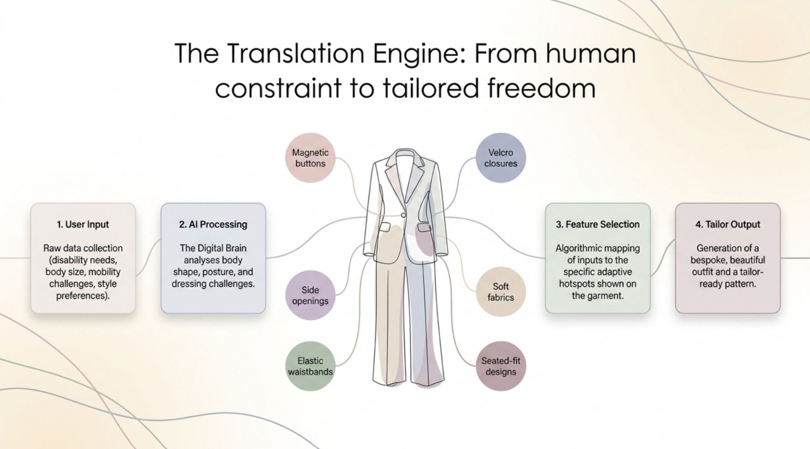
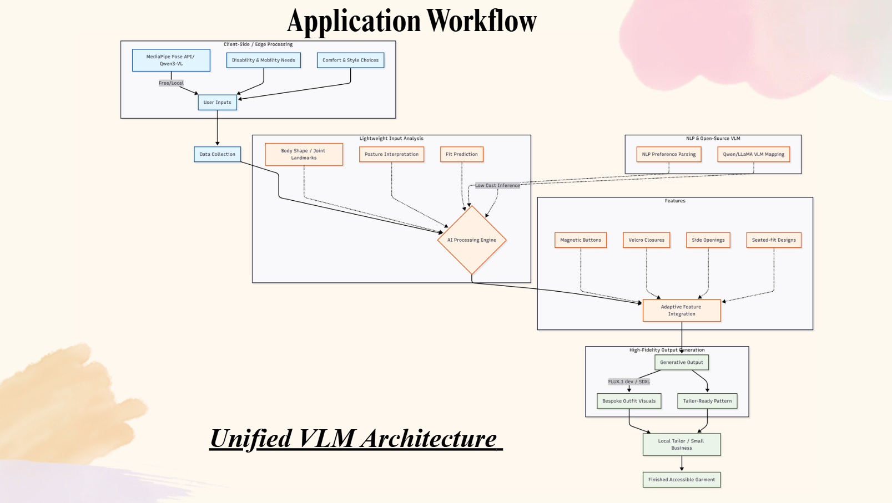
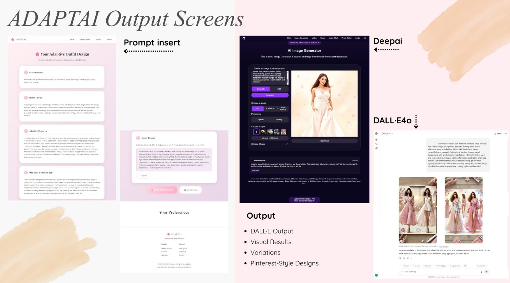
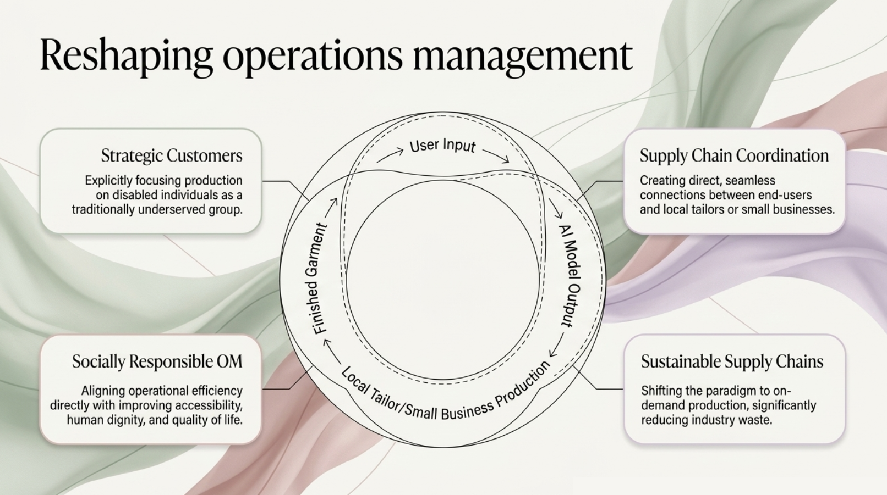

AdaptAI
AI-powered adaptive fashion platform that turns a person's body, mobility, sensory, and style needs into personalized clothing concepts that local tailors can realistically produce.
Impact First
I designed AdaptAI to improve dressing independence by translating personal constraints into tailor-ready adaptive clothing guidance
For people with disabilities, clothing can affect comfort, independence, dignity, caregiver reliance, and self-expression every single day. AdaptAI was designed to reduce that friction by turning complex user needs into structured adaptive garment requirements, visual design concepts, and production guidance that a local tailor or small business could act on.
Human Impact
Targeted a 15 to 20 minute reduction in daily dressing assistance by making clothing easier to select, adapt, and produce around individual needs.
Business Impact
Created a decentralized production model that could unlock 28% to 35% more sustainable income for local tailors through clearer demand and specifications.
Product Impact
Moved the concept beyond an outfit generator into an AI specification assistant for accessibility, fit, style, and garment engineering tradeoffs.
How might we help people with disabilities turn physical, functional, and personal clothing needs into garments that support dignity, independence, comfort, and style?
Problem Framing
The silent daily challenge of dressing revealed a product gap hiding in plain sight
My starting insight was that dressing is often treated as a routine task, but for users with mobility limitations, sensory sensitivities, limb differences, chronic pain, wheelchair use, or nonstandard body shapes, it can become a repeated daily decision filled with tradeoffs. A shirt opening may be too tight. A zipper may require dexterity the user does not have. Fabric may cause friction. A garment may fit while standing but pull incorrectly while seated.
The product problem was not simply, "Help users pick an outfit." The deeper product problem was, "Help users identify what prevents comfortable independent dressing, then convert that into clothing requirements without sacrificing personal style." That framing kept AdaptAI grounded in independence and dignity instead of novelty AI.

Users
I defined the primary users around functional dressing needs, not broad fashion demographics
The target user was not "anyone who likes fashion." AdaptAI was built for people whose bodies, mobility patterns, sensory needs, or care environments make standard clothing difficult to use. That includes wheelchair users, people with limited hand dexterity, people with chronic pain, people with limb differences, people who need caregiver assistance, and people with sensory sensitivities who still want clothing that feels expressive and personal.
End Users
People with disabilities or specialized dressing needs who want clothing that is easier to put on, more comfortable, and still aligned with their style.
Caregivers
Family members or support staff who often absorb the time and physical labor of dressing assistance when garments are not designed accessibly.
Local Tailors
Small businesses and sewists who could produce adaptive garments if they received clearer specifications, measurements, and feature guidance.
Research Insight
Standard fashion assumptions break down when bodies, mobility, and dexterity needs differ
Mainstream clothing often assumes standard body proportions, high-dexterity closures, rigid materials, and standing mobility. For many disabled users, those assumptions translate into tight openings, difficult fasteners, uncomfortable friction, limited seated fit, and dependence on caregiver assistance for basic dressing tasks.
This became the first major product decision: AdaptAI should not begin with an aesthetic style quiz. It should begin with functional constraints. The interface needs to ask what the user struggles with first, then translate that into adaptive features in a way that still respects style preferences.

Product Inputs
I defined three input categories that made personalization specific enough to be useful
AdaptAI combines physical fit data with lived-experience information. Instead of treating personalization as a style quiz, the concept captures body measurements and posture, disability and mobility needs, and comfort and style choices. That combination lets the system recommend adaptive features without erasing personal taste.
Body + Posture
Body proportions, seated posture, joint landmarks, and fit constraints help the system understand where standard garment geometry may fail.
Mobility + Sensory Needs
Dexterity, range of motion, caregiver support, fabric sensitivity, pain points, and dressing hotspots guide adaptive feature selection.
Comfort + Style
Color, silhouette, occasion, modesty, fabric feel, and aesthetic preferences protect the user's identity instead of reducing the product to function only.

Market Gap
The adaptive clothing landscape creates tradeoffs users should not have to make
Current adaptive wear can be limited, expensive, difficult to source, low in personalization, and overly clinical in appearance. I positioned AdaptAI around the opposite vision: user-driven variety, accessible cost, bespoke personalization, direct access, and equal priority on style and function.
This helped clarify the product opportunity. AdaptAI needed to compete against the experience of compromise: choosing between something that fits the body and something the user actually wants to wear. The winning concept was not "more adaptive inventory." It was a system for generating adaptive clothing specifications from the user's lived constraints.

Product Strategy
I prioritized the MVP around translation, explanation, and trust
The biggest product risk was overpromising. A fully automated manufacturing platform would require advanced pattern generation, garment safety review, tailor QA, and medical validation. For the hackathon MVP, I scoped AdaptAI as a personalized adaptive-fashion design and specification assistant. That made the product ambitious but credible.
Structured Intake
Capture user constraints in plain language and organize them into body, mobility, sensory, and style requirements.
Explainable Recommendations
Suggest adaptive features and explain why they matter, so users can trust and adjust the output.
Tailor Handoff
Generate a clean specification that helps a local tailor understand features, fabric needs, fit constraints, and production notes.
Solution
I designed the system as a translation engine from human constraint to tailored freedom
The AI workflow collects user input, interprets body shape and posture, parses comfort and style preferences, then maps needs to adaptive features such as magnetic buttons, Velcro closures, side openings, seated-fit designs, soft fabrics, and elastic waistbands. The output is not just a pretty outfit image; it is a structured concept that explains what features should be built into the garment and why.
For example, if a user reports shoulder mobility limitations, the system might recommend side openings or front closures. If the user reports hand dexterity challenges, it could avoid traditional buttons and prioritize magnetic closures or Velcro. If the user is seated most of the day, it could recommend seated-fit construction and fabric choices that reduce pressure or friction.

System Workflow
I scoped the architecture around low-friction input and actionable output
The realistic MVP translates user needs into adaptive design requirements, generates a structured image prompt or tailor-facing specification, and produces a visual concept users can react to. The broader architecture can combine pose and body input, VLM-based preference parsing, fit prediction, adaptive feature mapping, generative visuals, and local tailor production.
The workflow starts with user input from three sources: a pose or body scan, explicit mobility needs, and comfort or style preferences. The system then transforms those inputs into body-shape signals, posture interpretation, fit predictions, and natural-language design requirements. Finally, it maps those requirements into adaptive features and generates both a visual outfit concept and tailor-ready production notes.

Prototype Direction
The output screens show the product moving from user context to actionable clothing concepts
The prototype direction included a user summary, outfit design explanation, adaptive feature recommendations, reasoning for why the design works, an image prompt, and visual variations. I wanted the experience to feel empowering: the adaptive features should be integrated into the design, not become the entire visual identity.
That was a key UX decision. If adaptive features are presented as limitations, the user experience can feel clinical. If they are presented as design intelligence, the experience feels more personal and empowering. The output screen therefore needed to explain the garment in two languages at once: human-readable confidence for the user and structured requirements for production.

Tradeoffs
I separated what the product could prove now from what would need validation later
Because adaptive clothing affects comfort, safety, and mobility, the product cannot behave like a generic fashion generator. I treated the first version as a decision-support and specification tool, not a medical or manufacturing authority. That distinction made the product stronger because it avoided risky claims while still demonstrating the core value proposition.
Unsafe Recommendations
Adaptive features must be validated with disability experts, users, and tailors before being treated as production-ready.
Tailor Variance
Different tailors may interpret requirements differently, so specifications need examples, measurements, and quality checks.
Bias in Fit Data
The AI must support diverse body types, disabilities, mobility patterns, and cultural style preferences without defaulting to narrow assumptions.
Operations Model
I connected the product concept to a decentralized supply chain and circular resale model
AdaptAI also works as an operations model: users receive better-fitting adaptive designs, local tailors receive clearer specifications and new demand, and garments can later be resold or donated through profile-matched listings. This reframes accessibility as both a product design challenge and a socially responsible supply-chain opportunity.
Instead of relying only on centralized adaptive-wear retailers, AdaptAI imagines a platform-mediated network where local tailors can produce customized garments on demand. That model could reduce access barriers in regions where adaptive clothing is hard to buy, while creating more sustainable income opportunities for sewists and small businesses.

Measurement Plan
I defined success around independence, trust, production feasibility, and ecosystem value
Because this product touches both user experience and operations, the metrics needed to go beyond engagement. A useful AdaptAI pilot would measure whether users feel more confident dressing, whether caregivers spend less time assisting, whether tailors can interpret the specifications, and whether generated designs meet comfort and style expectations.
Dressing Independence
Measure change in self-reported confidence, dressing difficulty, and estimated assistance time before and after using AdaptAI.
Recommendation Trust
Track whether users accept, edit, or reject suggested adaptive features and whether explanations feel clear.
Tailor Feasibility
Measure how consistently tailors interpret specifications and how often production notes require clarification.
Impact
1st Place
Recognized as the winning hackathon concept for a disability-centered AI fashion platform.
Inclusive AI
Translated mobility, sensory, body, and style needs into adaptive clothing recommendations.
Operational Impact
Designed a model that could reduce dressing assistance time while creating new income for local tailors.
Next Iteration
I would validate the concept through user interviews, tailor testing, and a constrained feature library
The next iteration would start with interviews across disability communities to validate the highest-priority dressing barriers and language users prefer. Then I would test whether tailors can consistently interpret generated specifications. Instead of allowing unlimited AI outputs, I would begin with a curated adaptive feature library so recommendations are safer, easier to explain, and easier to produce.
User Testing
Interview wheelchair users, people with limited dexterity, sensory-sensitive users, and caregivers to validate the intake flow.
Feature Library
Create structured options for closures, openings, seams, fabrics, seated fit, pressure points, and caregiver access.
Tailor Pilot
Partner with a small group of tailors to test specification clarity, production cost, lead time, and quality consistency.
Reflection
What I learned
AdaptAI taught me to treat accessibility as a systems problem. The strongest product decision was not to promise a fully automated manufacturing platform immediately, but to build a credible bridge: from user needs, to explainable adaptive requirements, to visual concepts, to local production. That made the idea more human, more useful, and more realistic.
It also sharpened how I think as a product manager. The value was not in adding AI because it was exciting; the value was in using AI as a translator between lived experience, design requirements, and operational execution. That is the difference between a flashy concept and a product that could eventually change someone's daily life.